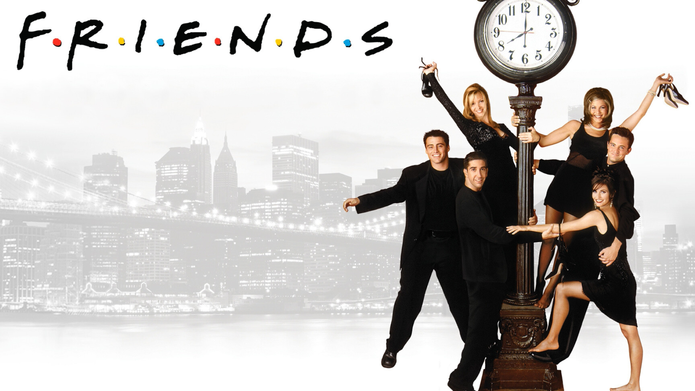
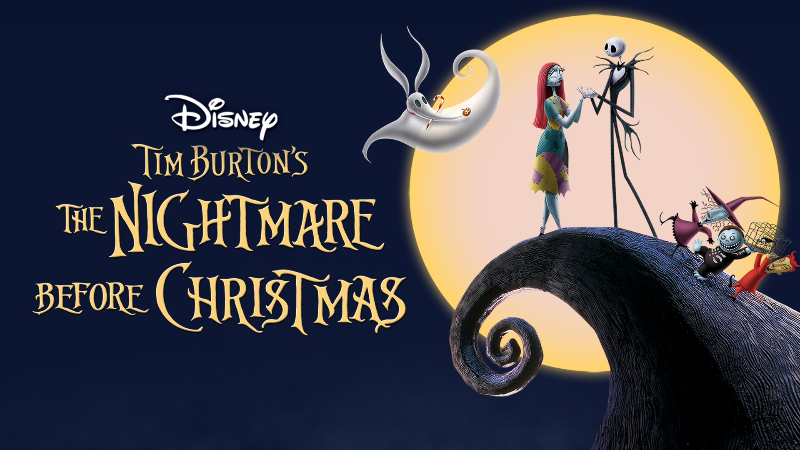
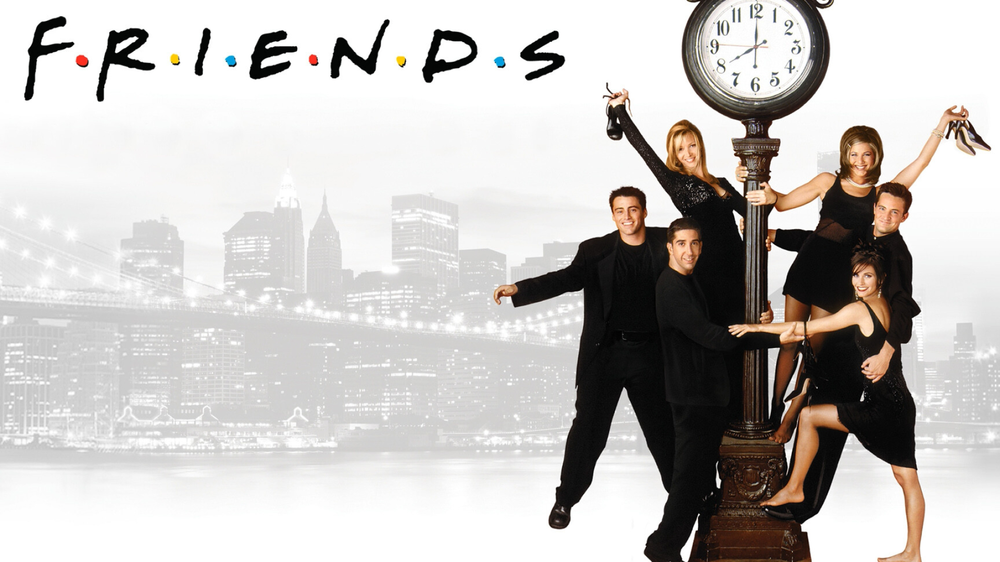
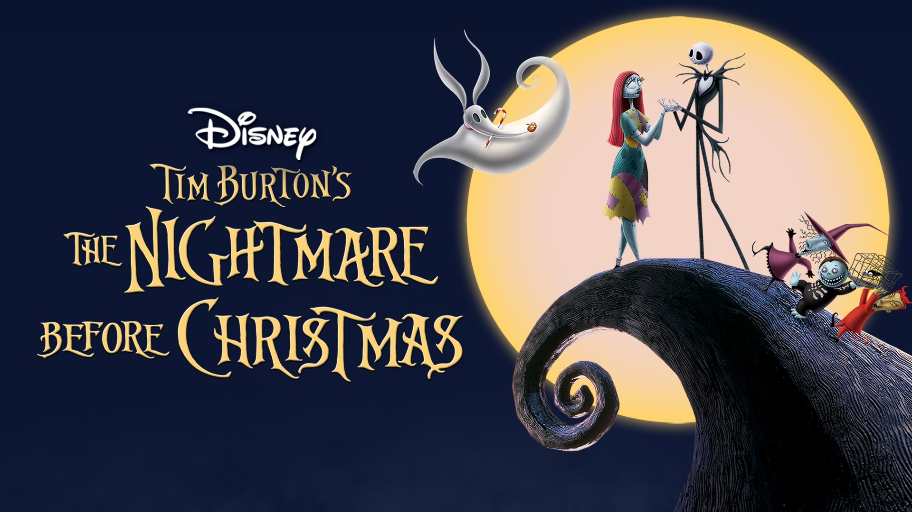

POPULARES
Gossip Girl
Gossip Girl (Chica indiscreta en Hispanoamérica) es una serie de televisión estadounidense de drama adolescente, basada en las novelas homónimas de Cecily von Ziegesar.
ver infoSex And The City
Carrie, Miranda, Samantha y Charlotte son cuatro mujeres inteligentes y dinámicas que viven en Nueva York, quienes, a pesar de sus diferencias y sus vidas sexuales en constante cambio, se mantienen juntas ante los altibajos.
ver infoAbout Time
Al igual que todos los hombres de su familia, Tim Lake posee el poder de viajar en el tiempo. Con el consejo de su padre, utiliza su habilidad especial para perseguir a su interés romántico, Mary.
ver infoSERIES
Breaking Bad
Walter White, un profesor de química, descubre que tiene cáncer y decide dedicarse al negocio de la fabricación de metanfetamina para pagar sus deudas médicas. Sus prioridades comienzan a cambiar cuando se asocia con Jesse.
ver infoThe Office
El programa documenta las hazañas de una empresa de suministro de papel en Scranton, Pensilvania. En una oficina que incluye a varios colegas, esta serie echa un vistazo a las vidas de sus compañeros de trabajo.
ver infoEuphoria
Un grupo de estudiantes de secundaria lucha con las drogas, el amor, las redes sociales y el dinero a medida que alcanzan la mayoría de edad mientras intentan establecer su identidad.
ver infoPELÍCULAS
Pulp Fiction
Dos matones, Vincent y Jules visitan a un grupo de jóvenes que le deben algo a su jefe, lo que desencadena una matanza y la posterior recuperación de la deuda (un maletín cuyo contenido desconocemos). Casi son asesinados por un joven que estaba escondido, pero las balas no los tocan.
ver infoBeetlejuice
Los fantasmas de Barbara y Adam, un matrimonio, siguen viviendo en su casa. Cuando la hermana de Barbara vende la casa a otras personas, estas hacen todo lo posible por echarlas.
ver infoHarry Potter y la piedra filosofal
Harry Potter, un huérfano de once años, descubre que es un mago y es invitado a estudiar en Hogwarts. Aunque escapa de una vida aburrida y se adentra en un mundo de magia, se encuentra con problemas que lo esperan.
ver info